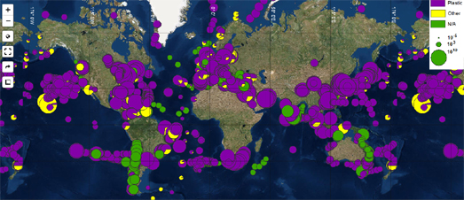

“Around 8 million tonnes of plastic is dumped into the world's oceans every single year. Plastic which is dangerous to marine life and, once it enters the food chain, dangerous to the health of people as well. This plastic comes from homes across the world. Mismanaged plastic waste and waste which is intentionally dumped enters the world's rivers and then flows into our seas. Studies are now beginning to map where this plastic ends up and where it originates from.
Litterbase is one organization attempting to collate the results of scientific studies researching the levels of plastic pollution found in the world's oceans. Currently Litterbase provides a summarized overview of the results from over 1,900 studies into the amount and composition of litter and its effect on marine environments. An example of one of these summaries is Distribution of Litter Types in Different Realms, which is an interactive map created from the results of 916 scientific publications on the amount, distribution and composition of litter in the world's oceans.
The map shows the results of hundreds of scientific studies carried out in specific locations around the world. It is not a heatmap of marine pollution around the world. It only shows the levels of pollution in the areas where studies were carried out. The markers on the map do show the levels of plastic and other types of pollution detected at different locations across the globe. However there are gaps in seas and oceans where little scientific research has taken place, for example around Africa and the Polar regions.”
Tuesday, April 16, 2019
Plastic Polluted River & Oceans
Posted by Keir Clarke
Maps Mania